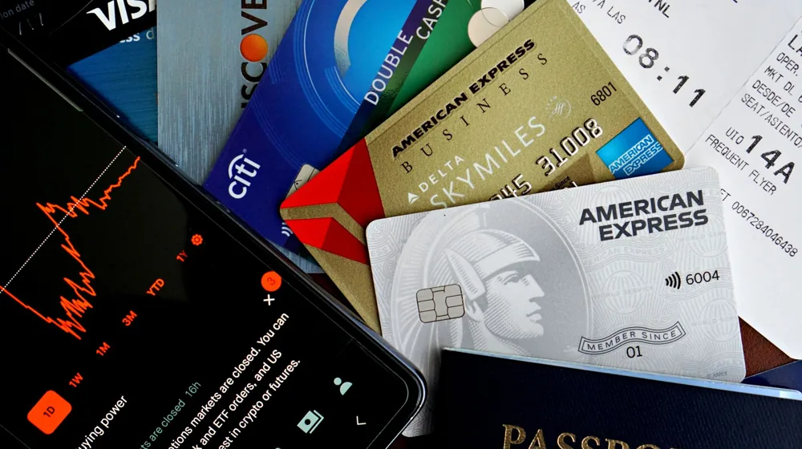

항공권 최저가 예약의 비밀: 저가항공 티켓 3만 원 더 싸게 사는 4가지 법칙
사진: DΛVΞ GΛRCIΛ / Pexels (무료 이미지, 출처 표기)
1. 항공권 예약의 골든타임: 몇 주 전에 사야 가장 쌀까?

항공권 가격은 실시간 수요와 공급에 따라 시시각각 변합니다. 흔히 출발 직전에 땡처리 표를 구하는 것이 가장 저렴하다고 생각하기 쉽지만, 이는 매우 도박에 가깝습니다. 글로벌 항공권 검색 엔진들의 통계 분석에 따르면, 단거리 노선의 경우 출발 기준 6주에서 8주 전, 장거리 노선의 경우 3개월에서 4개월 전에 예약할 때 평균 가격이 가장 낮게 형성됩니다.
너무 일찍 예약하는 것도 오히려 손해일 수 있습니다. 항공사들이 대략 출발 3~4개월 전부터 본격적인 예약율을 모니터링하며 가격 조정(프로모션)을 시작하기 때문입니다. 따라서 가고자 하는 여행지가 정해졌다면 출발 2달 전부터 가격 추이를 관찰하는 것이 좋습니다.
2. 구매 요일과 출발 요일에 숨겨진 가격 차이
어느 요일에 항공권을 검색하고, 어느 요일에 비행기를 타느냐에 따라서도 금액 차이가 발생합니다. 대체로 직장인들의 예약 수요가 몰리는 주말(금요일~일요일)은 항공권 가격이 가장 높게 책정되는 경향이 있습니다. 반면, 상대적으로 한적한 화요일과 수요일은 항공사들이 잔여 좌석을 소진하기 위해 운임을 낮추는 경우가 많습니다.
출발 요일 역시 주말을 낀 목요일이나 금요일 출발보다는 화요일이나 수요일 출발이 훨씬 저렴합니다. 일정에 여유가 있다면 주중 출발-주중 도착 여정으로 조회해 보시기 바랍니다. 주말 출발 대비 최소 10%에서 많게는 30%까지 비용을 아낄 수 있습니다.
3. 배보다 배꼽이 더 큰 LCC '추가 수수료' 피하기
저가항공(LCC, Low Cost Carrier)을 예매할 때 화면에 보이는 최초 가격만 믿고 덜컥 결제해서는 안 됩니다. 대형 항공사(FSC)와 달리 LCC는 위탁수하물(Checked Baggage, 비행기 화물칸에 싣는 짐), 기내식, 사전 좌석 지정 등을 모두 별도 유료 서비스로 판매하기 때문입니다. 특히 가장 저렴한 '특가 운임'의 경우 위탁수하물이 아예 포함되어 있지 않은 경우가 대부분입니다.
아래는 국내 주요 LCC 3사의 일반적인 운임 유형별 위탁수하물 규정 예시입니다. (2026년 기준 각 항공사 정책에 따라 세부 수치가 다를 수 있으므로 결제 전 최종 확인이 필요합니다.)
짐이 많은 여행객이라면 특가 운임에 수하물을 따로 추가하는 것보다, 한 단계 높은 할인 운임(위탁수하물 포함)을 선택하는 것이 결과적으로 더 저렴할 수 있습니다. 결제 단계로 넘어가기 전에 수하물 규정을 반드시 교차 검증해야 합니다.
4. 가격 비교 사이트와 공식 홈페이지 '교차 검증' 방법
스카이스캐너, 네이버 항공권, 카약 같은 메타서치(가격 비교) 사이트는 최저가를 찾는 가장 빠른 도구입니다. 하지만 여기서 찾은 최저가가 항상 최종 최저가는 아닙니다. 메타서치 사이트에서 대략적인 시세를 파악한 뒤에는 반드시 해당 항공사의 공식 홈페이지나 모바일 앱에 직접 접속해 가격을 다시 확인해야 합니다.
항공사들이 자사 앱 회원 유치를 위해 공식 홈페이지 전용 쿠폰을 발행하거나, 카드사 제휴 할인을 단독으로 진행하는 경우가 많기 때문입니다. 또한 여행사를 거쳐 예약할 때 발생하는 발권 수수료(약 10,000원 내외)를 아낄 수 있어, 공식 홈페이지 직접 예매가 최종 가격 면에서 유리한 경우가 많습니다.
5. 초보자를 위한 LCC 예매 전 필수 체크리스트
저가항공을 이용해 알뜰한 여행을 계획하고 있다면, 결제 버튼을 누르기 전에 다음 사항들을 마지막으로 점검해 보세요.
- 인코그니토(비밀 매칭) 모드 사용: 항공권 검색 기록(쿠키)이 쌓이면 가격이 올라간다는 속설이 있습니다. 기술적으로 완벽히 증명된 것은 아니지만, 브라우저의 '시크릿 창'이나 '인코그니토 모드'를 활용해 검색하는 것이 안전합니다.
- 편도 조합 예매하기: 반드시 같은 항공사로 왕복 표를 끊을 필요는 없습니다. 갈 때는 A 항공사, 올 때는 B 항공사를 이용하는 것이 시간대나 가격 면에서 더 이득일 수 있습니다.
- 환불 및 여정 변경 규정 확인: 특가 항공권은 환불 수수료가 티켓 가격과 맞먹는 경우가 허다합니다. 일정이 확실하지 않다면 수수료 규정을 꼼꼼히 확인하고 결제해야 손해를 막을 수 있습니다.
🔗 이 글도 함께 보면 좋아요: 노트북 고를 때 후회 없는 4가지 핵심 사양 용어 체크리스트
관련 추천 상품
이 포스팅은 쿠팡 파트너스 활동의 일환으로, 이에 따른 일정액의 수수료를 제공받습니다.
한눈에 보는 상품 목록
휴대용 디지털 캐리어 저울